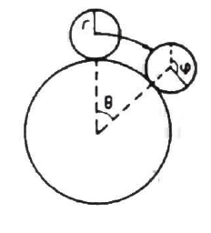
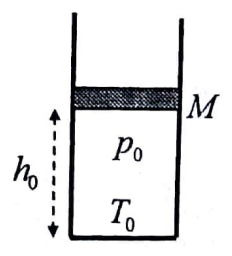
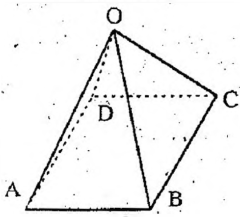
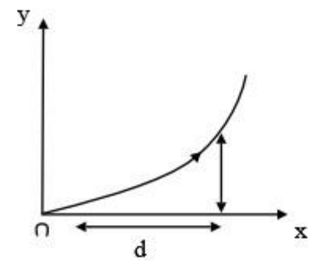
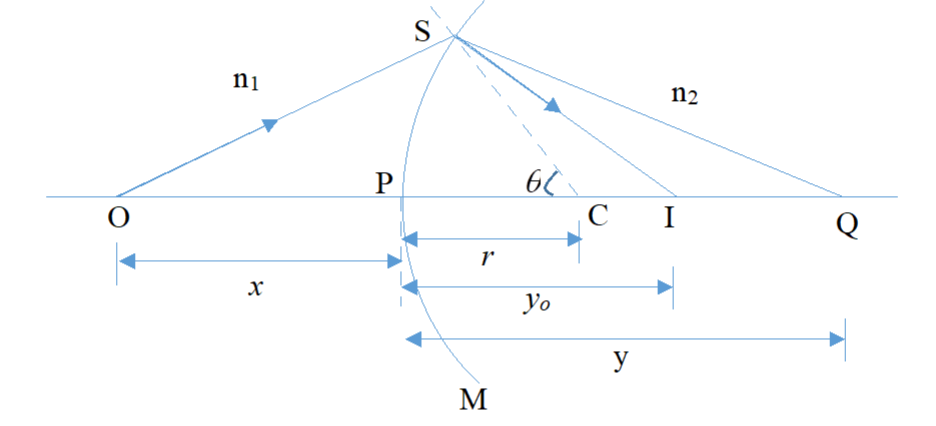

Bài tập thử
Gửi bởi anh Duy
Nhiệm vụ của các em là làm các bài tập sau đây. Ưu tiên các bài tập mà các em thấy bản thân mình tự tin và nắm chắc nhất, sau đấy là các bài còn lại.
Các em nên giải quyết bài tập theo cá nhân mà không thảo luận hay cố gắng tìm lời giải trên mạng của các bài tập tương tự, để làm căn cứ giúp anh xác định điểm yếu của từng bạn, từ đấy có hướng hỗ trợ.
Cố gắng lướt nhanh qua các bài tập, các bài tập đều ngắn, trình bày ở mức tối thiểu nhưng phải đi đến kết quả cuối cùng.
Scan và gửi bài giải cho anh qua email: duy5a247@gmail.com.
Bài tập cơ học số 1
Quỹ đạo chuyển động của một hạt chuyển động dưới tác dụng của một lực xuyên tâm là \(r \theta\) là hằng số. Xác định phương trình thế năng theo \(r\).
Gợi ý
Sử dụng phương trình tính lực trong hệ toạ độ cực.
Bài tập cơ học số 2
Một quả cầu đồng chất có khối lượng \(m\) và bán kính \(r\) lăn không trượt trên bề mặt bên ngoài của một quả cầu lớn hơn đứng yên có bán kính \(R\) như ở hình dưới. Gọi \(\theta\) là góc cực của quả cầu con đối với hệ trục tọa độ với gốc được đặt ở tâm của quả cầu lớn, với trục \(z\) là trục thẳng đứng. Quả cầu nhỏ bắt đầu lăn từ vị trí đỉnh của quả cầu lớn \(\theta=0\).
(a) Tính vận tốc ở tâm của quả cầu nhỏ như là hàm của \(\theta\).
(b) Tính góc mà tại đó quả cầu nhỏ rời khỏi quả cầu lớn
(c) Nếu bây giờ cho phép trượt với một hệ số ma sát là \(\mu\), thì ở điểm nào quả cầu nhỏ sẽ̃ bắt đầu trượt?

Gợi ý
a - Khi quả cầu nhỏ lăn không trượt, tổng động năng và thế năng là một hằng số của chuyển động. Bảo toàn năng lượng.
b - Khi cầu nhỏ rời khỏi cầu lớn, lực đỡ lên quả cầu nhỏ sẽ bằng 0, sử dụng phương trình cân bằng lực với lực đỡ bằng 0
c - Xét thời điểm khi quả cầu lăn không trượt, tìm lực ma sát. Sử dụng giá trị lực ma sát tìm vị trí khi thoả mãn phương trình lực ma sát.
\[f=\mu N\]
Bài tập nhiệt học số 1
Xét một mô hình đơn giản của khí quyển trái đất. Bỏ qua gió, sự đối lưu v.v. và bỏ qua sự biến thiên của lực hấp dấn.
(a) Giả thiết rằng khí quyển là đẳng nhiệt \( 0^{\circ} \mathrm{C} \) . Hãy thiết lập một biểu thức về sự phân bố các phân tử khí theo độ cao. Đánh giá sơ bộ độ cao mà ở đó chỉ còn phân nửa số phân tử khí.
(b) Giả thiết khí quyển là đoạn nhiệt lý tường. Chứng minh rằng nhiệt độ giảm tuyến tính theo độ cao. Ước tính tốc độ giảm nhiệt độ đó (cũng thường gọi là tốc độ giảm đoạn nhiệt) đối với trái đất.
Gợi ý
a - Dựa vào điều kiện cân bằng áp suất cơ bản và phương trình trạng thái khí.
b - Hệ thức từ cân bằng áp suất cơ bản và phương trình trạng thái khí vẫn đúng và áp dụng thêm phương trình mô tả quá trình đoạn nhiệt.
Bài tập nhiệt học số 2
Pit-tông khối lượng \(M\) được giữ trong một xilanh hình trụ đặt thẳng đứng có tiết diện ngang hình tròn với bán kính trong \(R_0\), đáy dưới kín (Hình dưới).
Dưới pit-tông là một khối khí lí tưởng có áp suất \(p_0\) bằng áp suất khí quyển, nhiệt độ \(T_0\), khối lượng mol \(\mu\), chỉ số đoạn nhiệt (tỉ số giữa nhiệt dung đẳng áp và nhiệt dung đẳng tích) \(\gamma\), chiều cao cột khí trong xilanh là \(h_0\).
Giả thiết bỏ qua ma sát giữa pit-tông và xilanh, khí trong xilanh không thoát được ra bên ngoài, xilanh và pit-tông hoàn toàn cách nhiệt với bên ngoài, nhiệt độ và áp suất khí trong xilanh phân bố đều. Gia tốc trọng trường là \(\vec{g}\).
Pit-tông được thá ra sao cho khí trong xilanh thực hiện một quá trinh đoạn nhiệt thuận nghịch đến khi pit-tông nằm cân bằng.
(a) Tìm áp suất, nhiệt độ, độ cao của cột khí trong xilanh khi pit-tông cân bằng.
(b) Tìm công mà khí trong xilanh đã nhận được, công do khí quyển và công do trọng lực của pittông đã thực hiện từ khi thả pit-tông đến khi pit-tông cân bằng. Giả thiết pit-tông nằm cân bằng ngay khi đến vị trí này lần đầu.

Gợi ý
Cân bằng áp suất từ cân bằng lực
Bài tập điện học số 1
Một quả cầu dẫn điện lý tưởng được đặt trong điện trường đều hướng theo trục \(z\).
Mật độ điện tích mặt trên mặt cầu là bao nhiêu ?
Gợi ý
Bài tập điện học số 2
Tám đoạn dây dẫn có cùng điện trở \(R\) được hàn lai thành hình tháp có đáy \(ABCD\) và đỉnh \(O\) (Hình dưới). Tính điện trở tương đương giữa các điểm :
(a) A và C ;
(b) A và B;

Gợi ý
Ép phẳng mạch điện,xét tính đối xứng
Bài tập quang học số 1
Chiết suất của không khí tại một sân bay phụ thuộc vào độ cao y theo công thức \(n=n_0(1+a y)\) trong đó hằng số \(a=1,5 \cdot 10^{-6} m^{-1} \), \(n_0\) là chiết suất không khí tại mặt đất.
Một người đứng trên đường băng, độ cao mặt của anh ta so với mặt đất là \(1,7 \mathrm{~m}\). Tính độ dài d mà anh ta nhìn rõ trên đường băng?

Gợi ý
Với môi trường chiết suất thay đổi, ánh sáng sẽ khúc xạ liên tục khi truyền qua từng lớp môi trường phân bố theo quy luật thay đổi cho trước.
Chia không khí thành các lớp nhỏ, tìm quy luật biến đổi, sử dụng tích phân để tính toán
Bài tập quang học số 2
Xét mặt cầu khúc xạ SPM ngăn cách hai môi trường có chiết suất \(n_1, n_2\). Điểm C là tâm mặt cầu SPM.
Xét hai điểm O và Q sao cho các điểm \(\mathrm{O}, \mathrm{C}\) và Q thẳng hàng. Tính quang trình OSQ theo các khoảng cách \(x, y, r\) và góc \(\theta\) (xem hình vẽ). Sử dụng nguyên lí Fermat để tìm tia sáng nối hai điểm O và Q .
Ngoài ra, giả thiết \(\theta\) rất nhỏ, xác định ảnh gần trục của điểm O.

Gợi ý
Áp dụng nguyên lý Fermat
1. Quang trình
-Ánh sáng truyền từ A đến B qua nhiều môi trường \(1,2,3, \ldots\) Chiết suất của các môi trường ấy lần lượt là \(n_1, n_2, n_3, \ldots\) và độ dài quang học của các quãng đường đi tương ứng là \(s_1, s_2, s_3, \ldots\) thì quang trình của ánh sáng là:
\(
L=n_1 s_1+n_2 s_2+n_3 s_3+\ldots=\sum n_i s_i
\)
-Nếu ánh sáng truyền từ A đến B trong môi trường có chiết suất thay đổi liên tục từ điểm này đến điểm khác thì ta chia quãng đường truyền thành các đoạn vô cùng nhỏ ds sao cho chiết suất của môi trường trong mỗi đoạn được coi là không đổi và quang trình lúc đó là: \(L=\int_A^B n d s\)
2. Nguyên lí Fermat
Quang trình của đường truyền một tia sáng từ một điểm A đến một điểm B , sau một số lần phản xạ và khúc xạ liên tiếp bất kì, có giá trị cực tiểu, cực đại hoặc dừng, so với quang trình của các tia sáng vô cùng gần tia AB